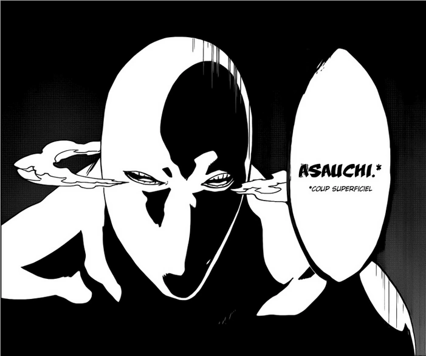

What are Zanpakuto
Zanpakuto are a special type of sword that is used by soul repaers these sword are used to purify hollows. Zanpakuto have two diffrent relase forms these give the soul reapsers a bigger boost in power and can give them some special ablitys depending on the typer of Zanpakuto a soul reaper weileds. For a soul reaper to gain more power from thier zanpakuto they must learn the name of thier zanpakuto. In order for a soul reaper to learn the name of a zanpakuto they be able to hear there zanpakuto's voice to learn it's name all zanpakuto have there own manafestation and the manafestation of that zanpakuto lives within the soul repaers iner world. Soul reapers and zanpakuto are connected this means that if the zanpakuto's owner were to die so does the zanpakuto.
